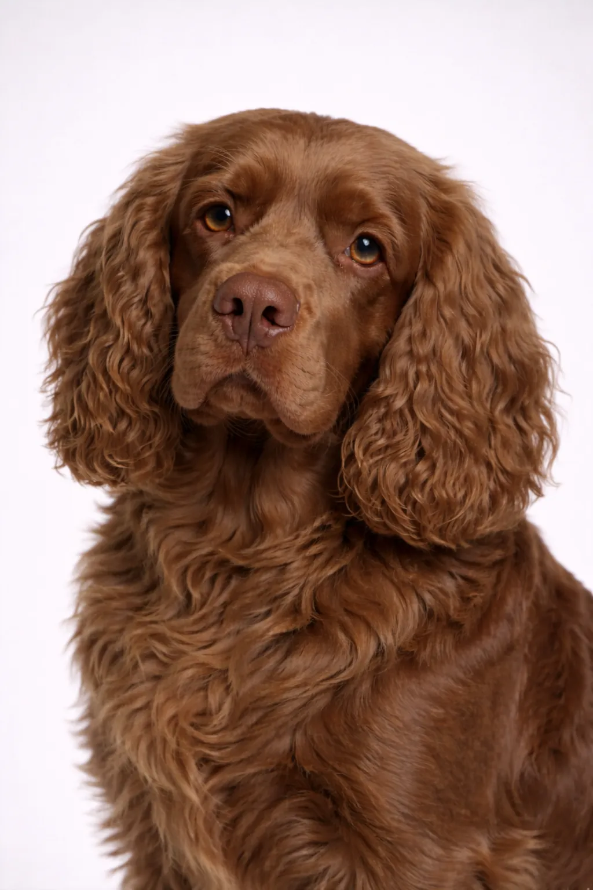

Sussex Spaniel
One of the rarest spaniel breeds, the Sussex has a unique golden liver coat and a surprisingly deep bark. They're slower-paced but determined hunters.
13-15 in
35-44 lbs
Rasbeoordelingen
Temperament
Overzicht
One of the rarest spaniel breeds, the Sussex has a unique golden liver coat and a surprisingly deep bark. They're slower-paced but determined hunters.
Temperament
The Sussex Spaniel is known for being friendly, cheerful, calm. They're excellent with children and make wonderful family pets. Early socialization helps them develop into well-rounded companions.
Gezondheid
Generally healthy with a lifespan of 13-15 jaar. Common concerns include joint problems. Regular veterinary checkups and preventive care are important. Maintaining a healthy weight helps prevent many health issues.
Beweging
Moderate exercise needs with daily walks and regular play sessions. They enjoy a mix of physical activity and relaxation time. Interactive games and training sessions provide mental stimulation. A consistent exercise routine keeps them healthy and happy.
⦿ Is Dit Ras Geschikt voor Jou?
✓ Ideaal Voor
- Those wanting a rare breed
- Calm households
- Spaniel enthusiasts
✗ Niet Ideaal Voor
- Those wanting a quiet dog
- High-energy activities
Ons Oordeel: One of the rarest spaniel breeds, the Sussex has a unique golden liver coat and a surprisingly deep bark. They're slower-paced but determined hunters.